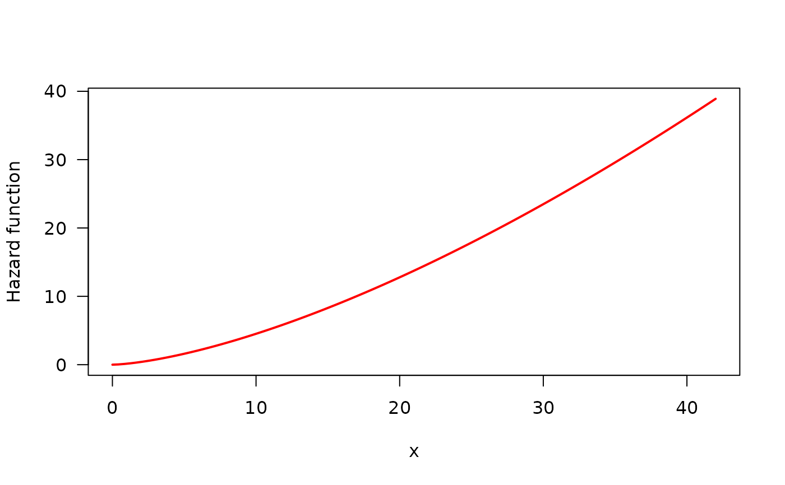
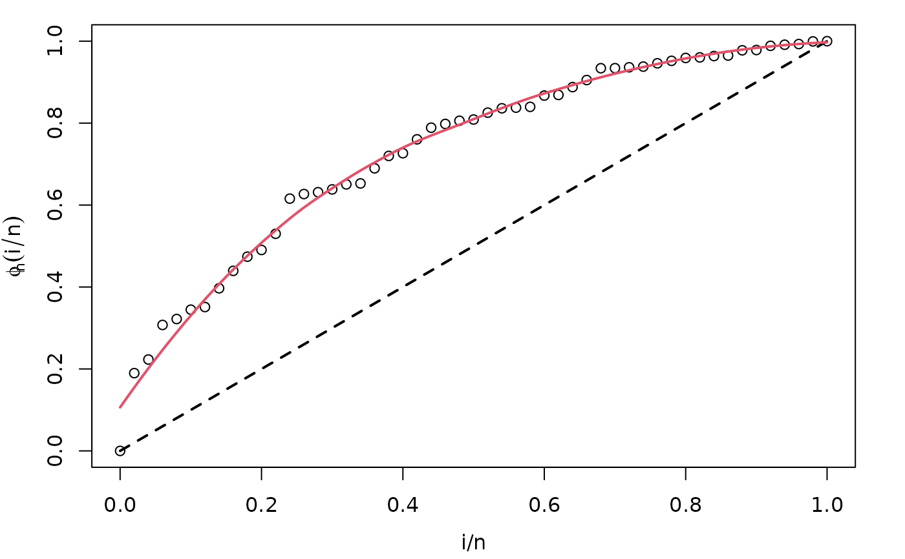

![[Maturing]](figures/lifecycle-maturing.svg)
Draws the empirical total time on test (TTT) plot and its non-parametric (LOESS) estimated curve useful for identifying hazard shape.
Usage
# S3 method for HazardShape
plot(
x,
xlab = "i/n",
ylab = expression(phi[n](i/n)),
xlim = c(0, 1),
ylim = c(0, 1),
col = 1,
lty = NULL,
lwd = NA,
main = "",
curve_options = list(col = 2, lwd = 2, lty = 1),
par_plot = lifecycle::deprecated(),
legend_options = lifecycle::deprecated(),
...
)Arguments
- x
an object of class
initValOW, generated withTTT_hazard_shape.- xlab, ylab
titles for x and y axes, as in
plot.- xlim
the x limits (x1, x2) of the plot.
- ylim
the y limits (x1, x2) of the plot.
- col
the colors for lines and points. Multiple colors can be specified. This is the usual color argument of
plot.default.- lty
a vector of line types, see
parfor further information.- lwd
a vector of line widths, see
parfor further information.- main
a main title for the plot.
- curve_options
a list with further arguments useful for customization of non-parametric estimate plot.
- par_plot
(deprecated) some graphical parameters which can be passed to the plot. See Details section for further information.
- legend_options
(deprecated) a list with fur further arguments useful for customization. See Details section for further information. of the legend of the plot.
- ...
further arguments passed to empirical TTT plot.
Details
This plot complements the use of TTT_hazard_shape. It is always
advisable to use this function in order to check the result of non-parametric
estimate of TTT plot. See the first example in Examples section for
an illustration.
Author
Jaime Mosquera Gutiérrez jmosquerag@unal.edu.co
Examples
library(EstimationTools)
#----------------------------------------------------------------------------
# Example 1: Increasing hazard and its corresponding TTT plot with simulated
# data
hweibull <- function(x, shape, scale) {
dweibull(x, shape, scale) / pweibull(x, shape, scale, lower.tail = FALSE)
}
curve(hweibull(x, shape = 2.5, scale = pi),
from = 0, to = 42,
col = "red", ylab = "Hazard function", las = 1, lwd = 2
)

y <- rweibull(n = 50, shape = 2.5, scale = pi)
my_initial_guess <- TTT_hazard_shape(formula = y ~ 1)
par(mar = c(3.7, 3.7, 1, 2), mgp = c(2.5, 1, 0))
plot(my_initial_guess)

#----------------------------------------------------------------------------